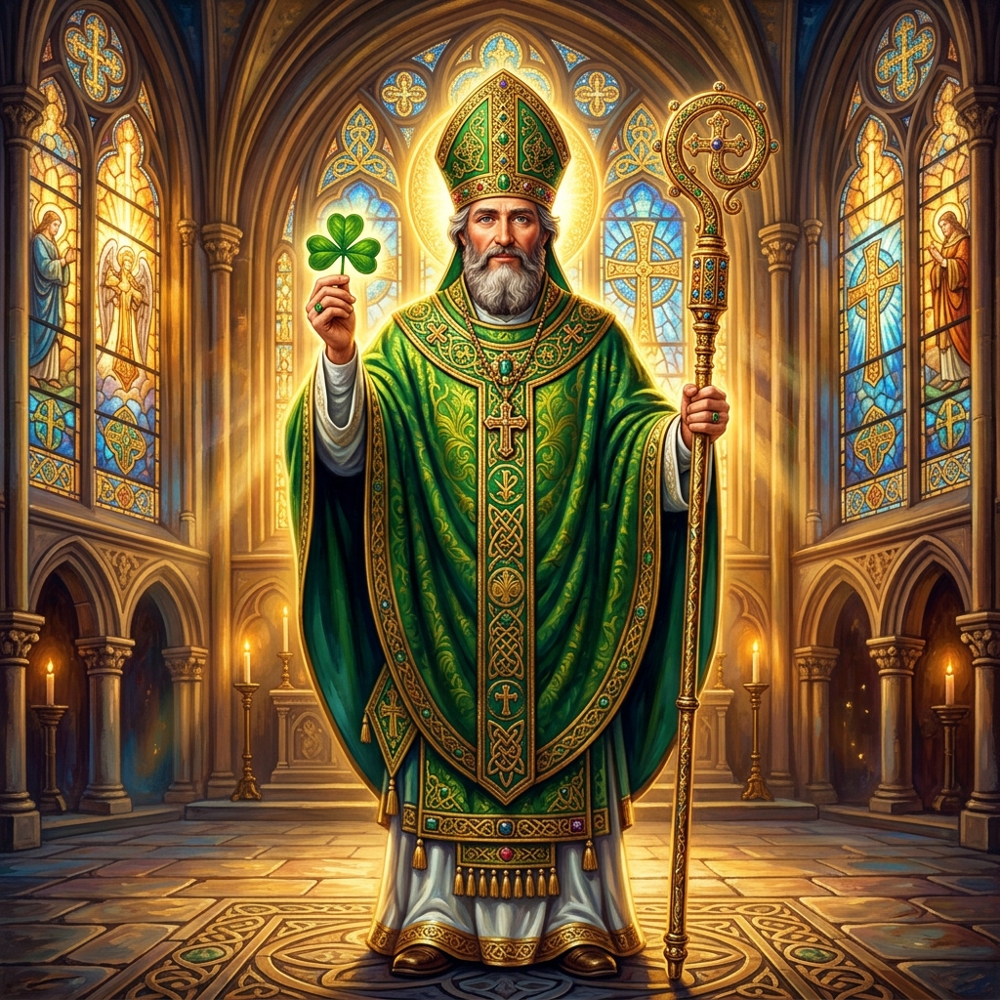
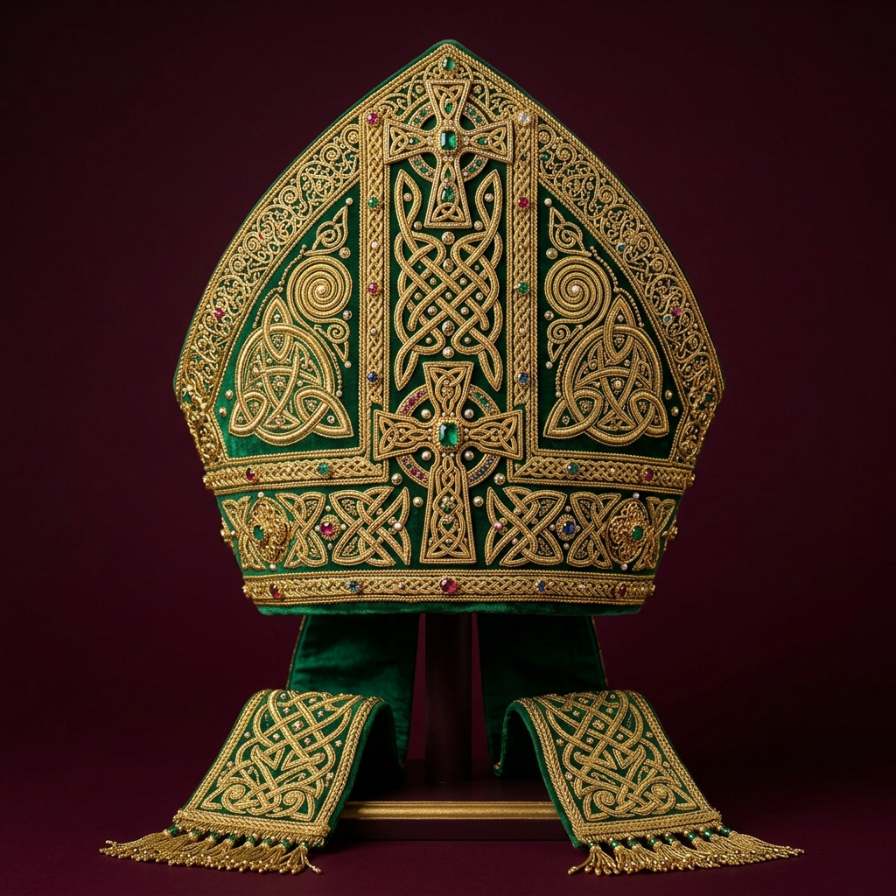
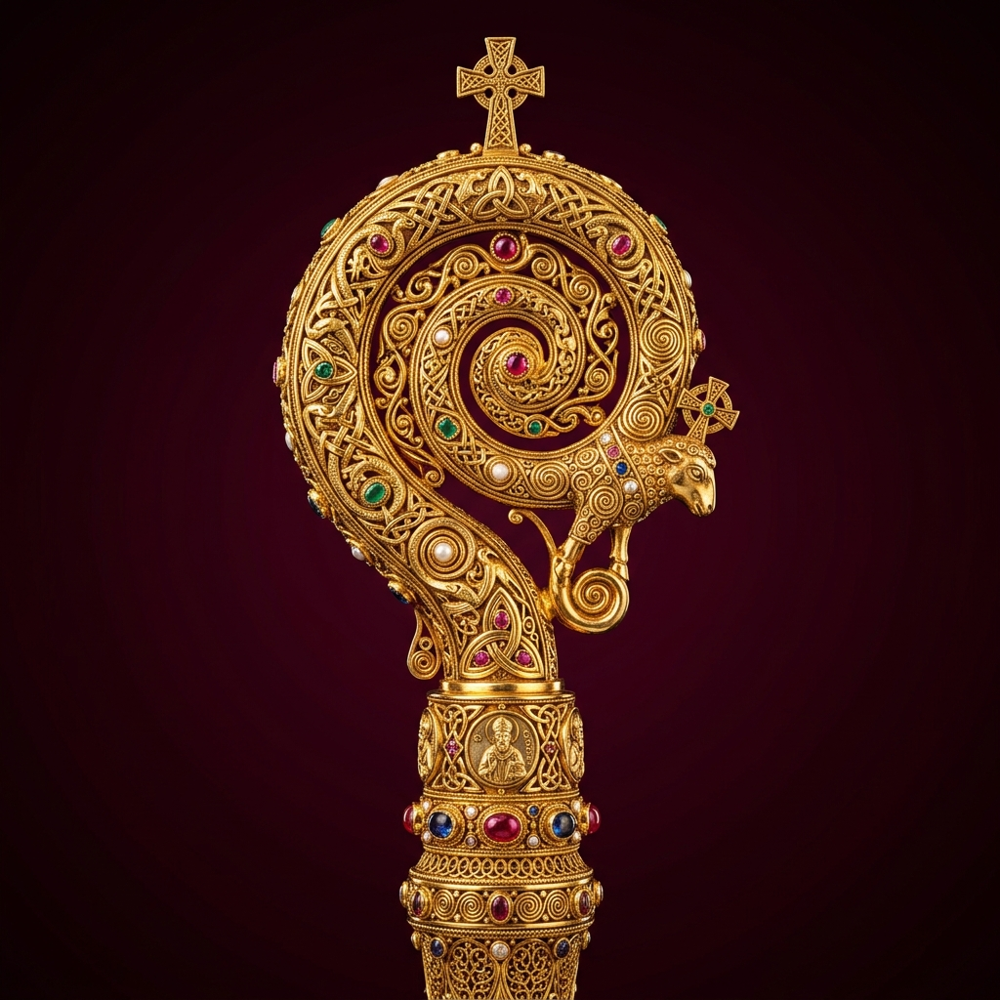
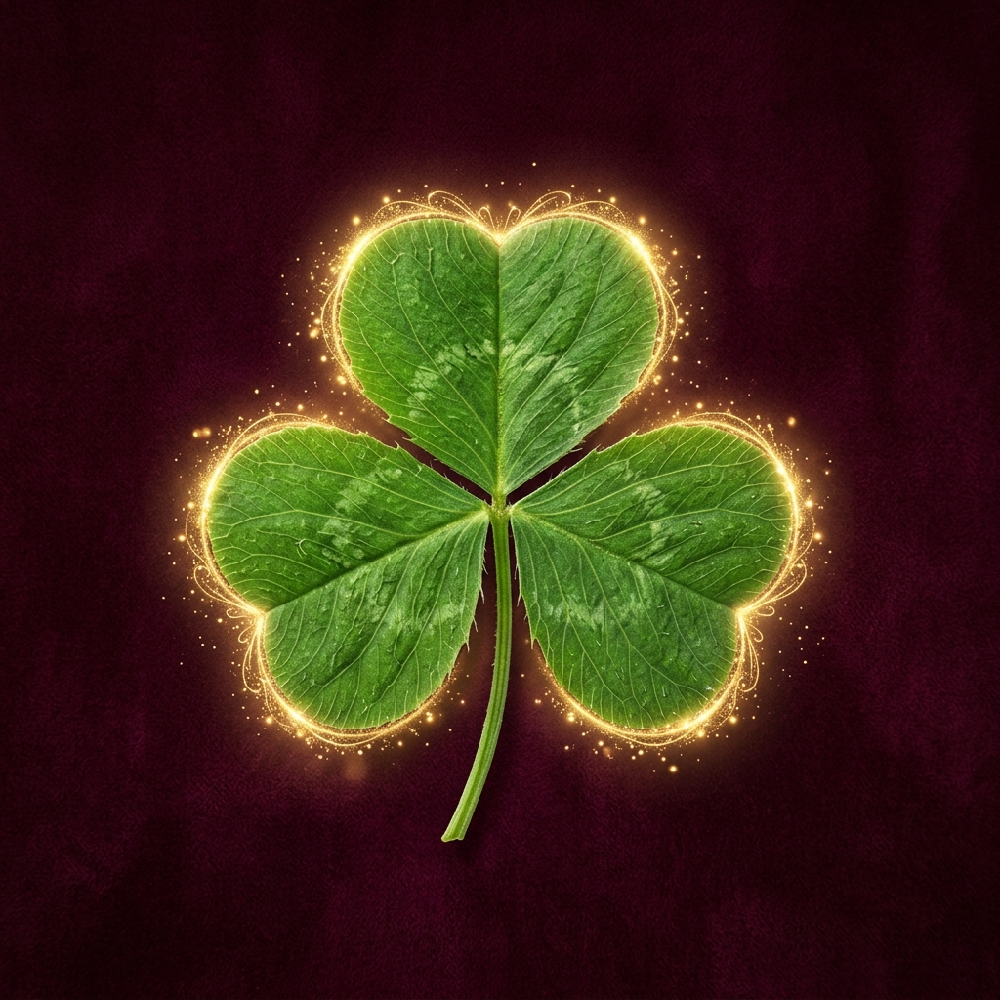
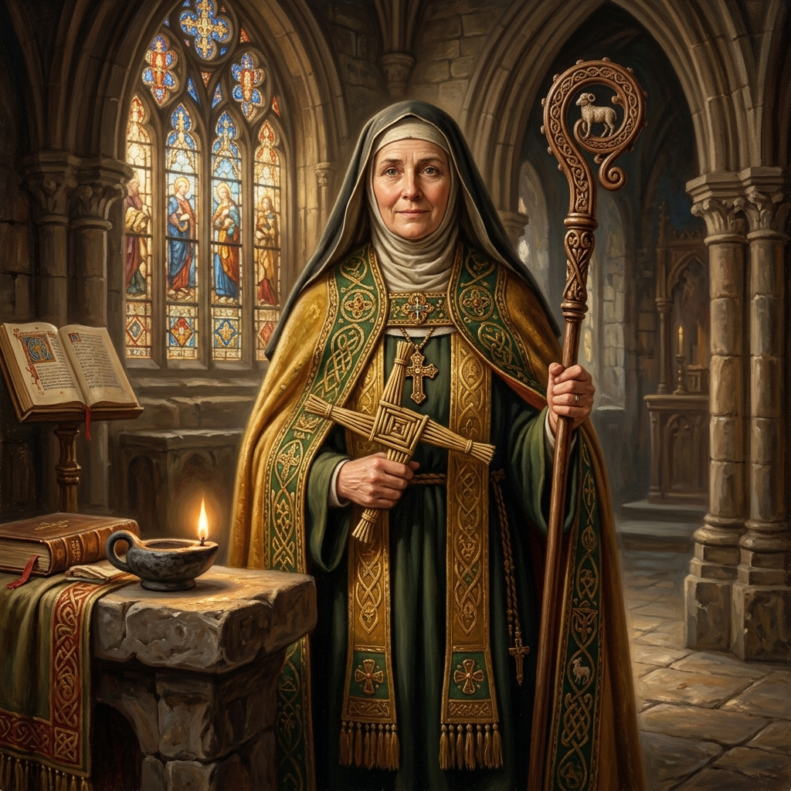
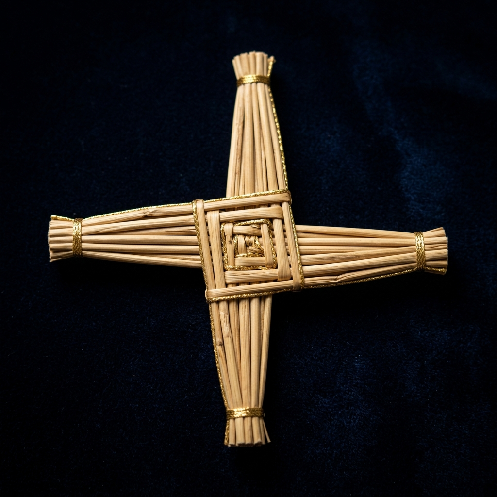
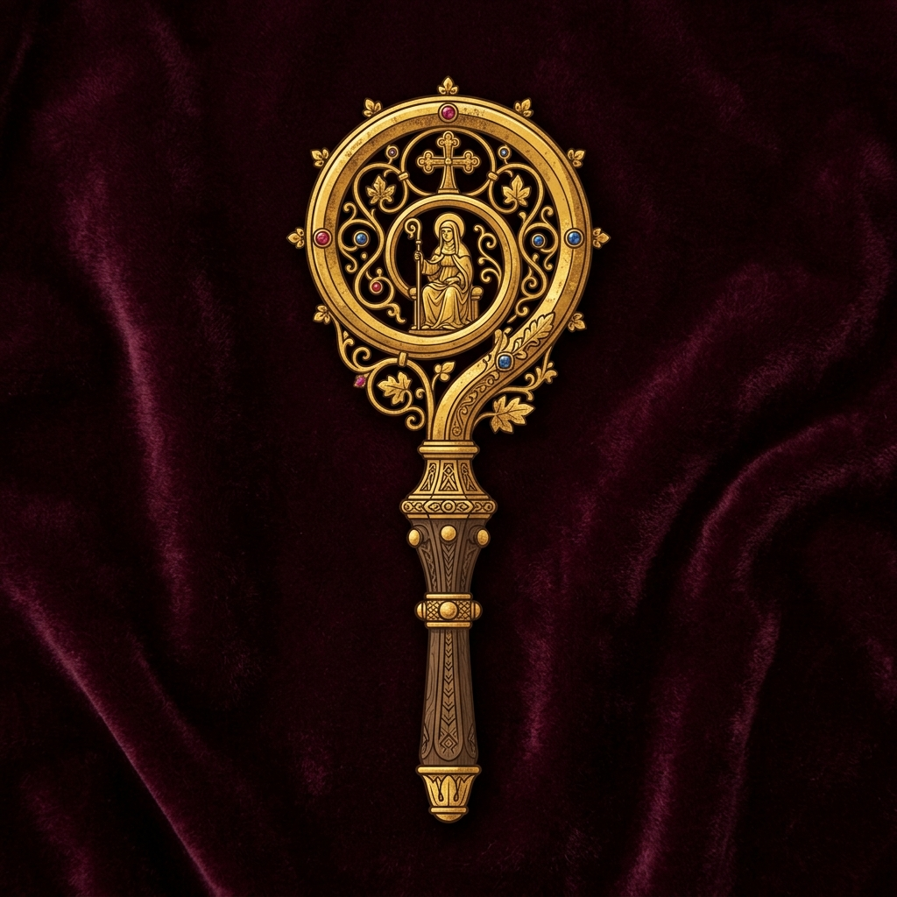
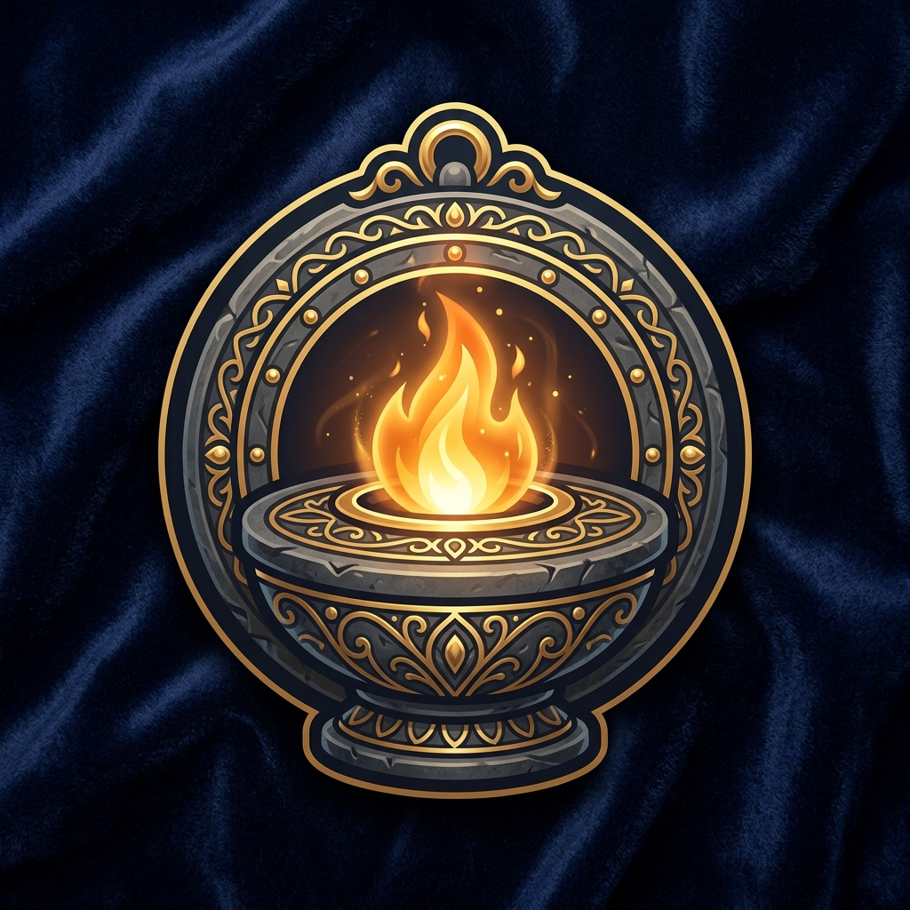
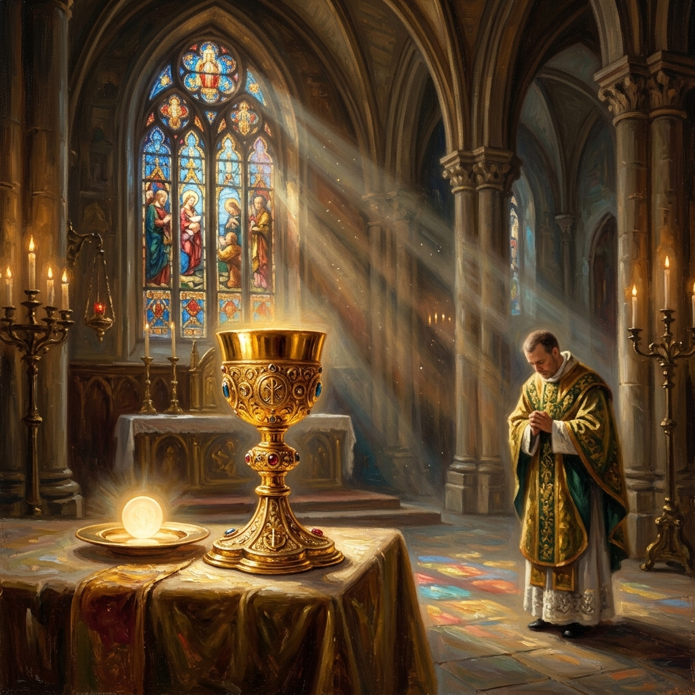

First Holy Communion
An Interactive Journey of Faith
An Interactive Journey of Faith
Explore the story of a man who climbed a tree to see Jesus, and found his life transformed forever.

“I am the bread of life. Whoever comes to me will never go hungry, and whoever believes in me will never be thirsty.”
— John 6:35
In the Holy Eucharist, we receive the body and blood of Jesus Christ. This sacrament unites us with Him in love, strengthens our soul, and nourishes our faith for eternal life.

Saint Patrick utilized elements of nature and church liturgy to teach the Irish people about God.
Click directly on his Mitre, Staff, or Shamrock inside the portrait to explore their spiritual meanings.

The mitre is the liturgical headdress worn by bishops. It represents St. Patrick's apostolic authority and his divine mission to preach, guide, and protect the people of Ireland in the Christian faith.
← Back to Overview
The pastoral staff, or crosier, represents St. Patrick's role as a spiritual shepherd. According to Irish legend, he used his staff to drive the snakes of Ireland into the sea, symbolizing the banishment of evil.
← Back to Overview
Saint Patrick famously picked the three-leaved shamrock from the Irish soil to explain the mystery of the Holy Trinity. He showed how the Father, the Son, and the Holy Spirit are three distinct persons in one single God, just as three leaves form one single clover.
← Back to Overview
Saint Brigid is one of Ireland's patron saints, celebrated for her wisdom, charity, and deep love for God's creation.
Click directly on her Woven Cross, Abbess Staff, or the Perpetual Flame inside her portrait to explore their spiritual meanings.

Woven from straw rushes by Brigid at the deathbed of a pagan chieftain, this unique cross became a powerful symbol of faith. According to tradition, placing this cross in a home brings God's peace, protection, and blessing.
← Back to Overview
The crosier represents Brigid's authority as the Abbess of Kildare, where she governed a unique double monastery for both men and women. It symbolizes her pastoral care, leadership, and protection of her flock.
← Back to Overview
Brigid and her sisters maintained a perpetual flame at Kildare, representing the warmth of Christian charity and the light of the Holy Spirit. This fire represents Brigid's hospitality and her burning love for the poor.
← Back to OverviewReflect on where you see and share God's love. Complete the activity to make the window shine!
This stained glass window has different sections for the special areas of your life. Clicking on a section reveals a reflection prompt. Let's color them with love!
Click any section of the stained glass window on the left to start reflecting and coloring.
How do you show love, kindness, and helpfulness to your family members at home? (e.g. helping with chores, listening, sharing)
What is something kind you can do or say to a classmate who is feeling lonely or left out at school?
How can you care for God's animals and show respect for the beautiful world around us?
What is your favorite prayer or song to share with God and your parish family during Mass?
How can you show gratitude and respect to the teachers who dedicate their time to help you learn?
How do you help your friends when they are sad, and how do you share smiles and fun together?
Your stained glass window is fully shining with the light of God's love in your life! Sigue adelante (Go forward) and share this light with everyone you meet.
Scroll down to continue the interactive journey of faith.

“Go in peace, glorifying the Lord by your life. Thanks be to God.”
— Mass Dismissal
We hope this interactive journey of faith has brought you closer to the sacred mysteries of the Holy Sacrament. May Jesus, the Bread of Life, bless you and guide your steps always.